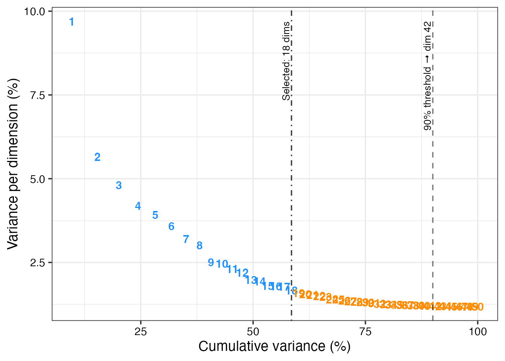

scSidekick - Dimensionality Reduction: Determine_nDims
02_dim_reduction.RmdOverview
Choosing how many dimensions to retain after PCA (or LSI, ICA, etc.) is one of the most consequential decisions in a single-cell pipeline. Too few and you lose biological signal; too many and you add noise.
Determine_nDims() automates this using two complementary
heuristics and returns the more conservative (lower) of
the two - a safe default that you can override if the plot suggests
otherwise.
1. Basic call
dims <- Determine_nDims(bmcite, reduction = "pca")The console output shows both heuristics and the final selection. The plot displays every PC as a number - blue = selected, orange = discarded. Vertical lines mark the two cutoffs.
dims$plot
2. Accessing the result
# Recommended number of dimensions
dims$n_dims## [1] 18
# Heuristic 1 - cumulative variance plateau
dims$cum_thresh## [1] 42
# Heuristic 2 - elbow
dims$elbow_thresh## [1] 18dims$n_dims is a plain integer: pass it to
dims = 1:dims$n_dims in all downstream Seurat calls to
guarantee consistency.
3. Using the result downstream
bmcite <- RunUMAP(bmcite, dims = 1:dims$n_dims)
bmcite <- FindNeighbors(bmcite, dims = 1:dims$n_dims)
bmcite <- FindClusters(bmcite, resolution = 0.5)## Modularity Optimizer version 1.3.0 by Ludo Waltman and Nees Jan van Eck
##
## Number of nodes: 30672
## Number of edges: 962789
##
## Running Louvain algorithm...
## Maximum modularity in 10 random starts: 0.9093
## Number of communities: 15
## Elapsed time: 4 secondsAfter this, bmcite has a UMAP embedding and cluster
assignments ready for all visualization functions in vignettes
03-05.
4. Adjusting thresholds
The defaults (threshold_cum_pct = 90,
threshold_pct = 5) work well for most datasets. Adjust them
if the elbow plot looks unusual.
# Stricter: require 85 % cumulative variance, per-dim contribution < 3 %
dims_strict <- Determine_nDims(bmcite,
threshold_cum_pct = 85,
threshold_pct = 3)
dims_strict$n_dims
# More permissive: 95 % cumulative, 1 % marginal drop
dims_loose <- Determine_nDims(bmcite,
threshold_cum_pct = 95,
threshold_pct = 1)
dims_loose$n_dims5. Using with any linear reduction
The function works with any named reduction slot - PCA, LSI (ATAC), ICA, or Harmony.
# After RunHarmony():
library(harmony)
bmcite <- RunHarmony(bmcite, group.by.vars = "donor")
dims_h <- Determine_nDims(bmcite, reduction = "harmony")6. Saving the elbow plot
dims$plot is a standard ggplot2 object.
ggplot2::ggsave(
filename = "bmcite_elbow.pdf",
plot = dims$plot,
width = 6, height = 4)Parameter reference
| Parameter | Type | Default | Description |
|---|---|---|---|
seurat_object |
Seurat | required | Object with a linear reduction computed |
reduction |
character | "pca" |
Name of the reduction slot |
threshold_pct |
numeric | 5 |
Max per-dim variance (%) for a selected dimension |
threshold_cum_pct |
numeric | 90 |
Target cumulative variance (%) |
threshold_diff_pct |
numeric | 0.1 |
Min consecutive drop to count as elbow |
elbow_plot |
logical | TRUE |
Return annotated elbow plot |
Return value
| Element | Type | Description |
|---|---|---|
$n_dims |
integer | Recommended number of dimensions |
$cum_thresh |
integer | Dimension from heuristic 1 (cumulative plateau) |
$elbow_thresh |
integer | Dimension from heuristic 2 (elbow) |
$plot |
ggplot | Annotated elbow plot |
See also
- Vignette 01:
PrepObject- run after clustering to register colors - Vignette 03:
PlotDimPlots- UMAP visualization afterRunUMAP(dims = 1:dims$n_dims)
Session info
## R version 4.3.1 (2023-06-16)
## Platform: aarch64-apple-darwin20 (64-bit)
## Running under: macOS 15.6
##
## Matrix products: default
## BLAS: /Library/Frameworks/R.framework/Versions/4.3-arm64/Resources/lib/libRblas.0.dylib
## LAPACK: /Library/Frameworks/R.framework/Versions/4.3-arm64/Resources/lib/libRlapack.dylib; LAPACK version 3.11.0
##
## locale:
## [1] en_US.UTF-8/en_US.UTF-8/en_US.UTF-8/C/en_US.UTF-8/en_US.UTF-8
##
## time zone: America/Chicago
## tzcode source: internal
##
## attached base packages:
## [1] stats graphics grDevices utils datasets methods base
##
## other attached packages:
## [1] dplyr_1.1.4 stxBrain.SeuratData_0.1.2
## [3] pbmc3k.SeuratData_3.1.4 ifnb.SeuratData_3.1.0
## [5] bmcite.SeuratData_0.3.0 SeuratData_0.2.2
## [7] Seurat_5.2.1 SeuratObject_5.1.0
## [9] sp_2.1-3 scSidekick_0.1.0
##
## loaded via a namespace (and not attached):
## [1] RColorBrewer_1.1-3 rstudioapi_0.16.0 jsonlite_2.0.0
## [4] magrittr_2.0.3 spatstat.utils_3.1-0 farver_2.1.2
## [7] rmarkdown_2.29 fs_1.6.6 ragg_1.4.0
## [10] vctrs_0.6.5 ROCR_1.0-11 spatstat.explore_3.2-7
## [13] htmltools_0.5.8.1 sass_0.4.10 sctransform_0.4.1
## [16] parallelly_1.37.1 KernSmooth_2.23-22 bslib_0.9.0
## [19] htmlwidgets_1.6.4 desc_1.4.3 ica_1.0-3
## [22] plyr_1.8.9 plotly_4.10.4 zoo_1.8-14
## [25] cachem_1.1.0 igraph_2.0.3 mime_0.13
## [28] lifecycle_1.0.4 pkgconfig_2.0.3 Matrix_1.6-5
## [31] R6_2.6.1 fastmap_1.2.0 fitdistrplus_1.1-11
## [34] future_1.33.2 shiny_1.11.1 digest_0.6.37
## [37] colorspace_2.1-1 patchwork_1.3.1 tensor_1.5
## [40] RSpectra_0.16-1 irlba_2.3.5.1 textshaping_0.3.7
## [43] labeling_0.4.3 progressr_0.14.0 spatstat.sparse_3.0-3
## [46] httr_1.4.7 polyclip_1.10-6 abind_1.4-8
## [49] compiler_4.3.1 withr_3.0.2 fastDummies_1.7.3
## [52] highr_0.10 MASS_7.3-60.0.1 rappdirs_0.3.3
## [55] tools_4.3.1 lmtest_0.9-40 otel_0.2.0
## [58] httpuv_1.6.16 future.apply_1.11.2 goftest_1.2-3
## [61] glue_1.8.0 nlme_3.1-164 promises_1.5.0
## [64] grid_4.3.1 Rtsne_0.17 cluster_2.1.6
## [67] reshape2_1.4.4 generics_0.1.4 gtable_0.3.6
## [70] spatstat.data_3.0-4 tidyr_1.3.1 data.table_1.15.4
## [73] spatstat.geom_3.2-9 RcppAnnoy_0.0.22 ggrepel_0.9.6
## [76] RANN_2.6.1 pillar_1.11.0 stringr_1.5.1
## [79] spam_2.10-0 RcppHNSW_0.6.0 later_1.4.2
## [82] splines_4.3.1 lattice_0.22-6 survival_3.5-8
## [85] deldir_2.0-4 tidyselect_1.2.1 miniUI_0.1.1.1
## [88] pbapply_1.7-2 knitr_1.45 gridExtra_2.3
## [91] scattermore_1.2 xfun_0.52 matrixStats_1.2.0
## [94] stringi_1.8.7 lazyeval_0.2.2 yaml_2.3.10
## [97] evaluate_0.23 codetools_0.2-20 tibble_3.3.0
## [100] cli_3.6.5 uwot_0.1.16 xtable_1.8-4
## [103] reticulate_1.42.0 systemfonts_1.0.6 jquerylib_0.1.4
## [106] dichromat_2.0-0.1 Rcpp_1.1.0 globals_0.16.3
## [109] spatstat.random_3.2-3 png_0.1-8 parallel_4.3.1
## [112] pkgdown_2.1.3 ggplot2_3.5.2 dotCall64_1.1-1
## [115] listenv_0.9.1 viridisLite_0.4.2 scales_1.4.0
## [118] ggridges_0.5.6 purrr_1.0.4 crayon_1.5.2
## [121] rlang_1.1.6 cowplot_1.2.0.9000